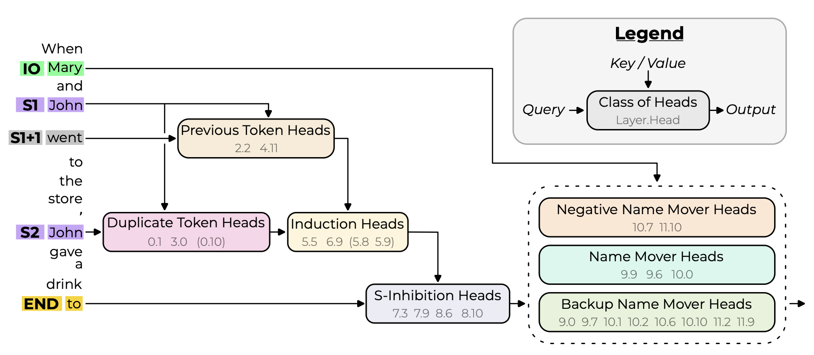
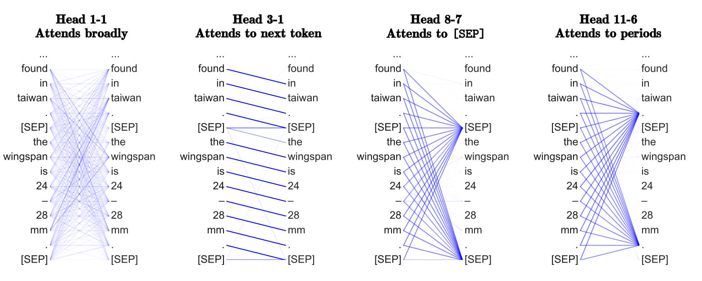
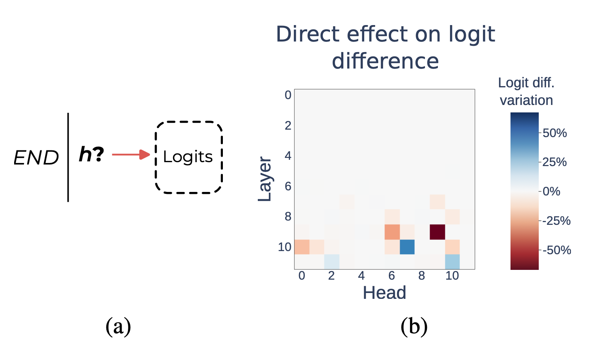

# CMSC 25750/35750: ## Large Language Models ## Lecture 2: Attention <p style="text-align: center;"> Chenhao Tan<br/> University of Chicago<br/> @ChenhaoTan, @chenhaotan.bsky.social<br/> chenhao@uchicago.edu </p>
## Attention A transformer has two main components: attention heads and MLPs. Attention moves information between token positions. An attention head decides which tokens to look at (via QK) and what to copy from them (via OV). It is the mechanism by which tokens communicate. MLPs act pointwise on each token independently. They are thought to store factual associations and apply transformations, but do not move information across positions.
## Attention This lecture focuses on attention. We start with Clark et al. (2019), a mostly observational paper that asks what BERT's attention heads look at. We then move to Wang et al. (2022), which illustrates modern mechanistic interpretability techniques: causal interventions, circuit analysis, and end-to-end validation.
## Today's agenda * Paper overviews * Deep dives * Discussion
## Today's agenda * Paper overviews * <span style="color: #767676;">Deep dives</span> * <span style="color: #767676;">Discussion</span>
## What Does BERT Look At? Clark et al. (2019) analyze all 144 attention heads in BERT-base. Three main findings: - Attention heads show consistent surface-level patterns: attending to [SEP], to adjacent tokens, or broadly over the sentence - Certain heads align well with linguistic relations (direct objects, determiners, coreference) without any explicit supervision - A simple probing classifier on attention maps achieves 77 UAS at dependency parsing <p class="citation"><a href="https://arxiv.org/abs/1906.04341">Clark et al., 2019</a></p>
## Interpretability in the Wild Wang et al. (2022) explain how GPT-2 small solves one specific task: indirect object identification (IOI). "When Mary and John went to the store, John gave a drink to ___" The algorithm: identify all names, remove duplicates, output the remaining one. They find a circuit of 26 attention heads in 7 categories that implements this algorithm end-to-end. GPT-2 small has 144 heads total (12 layers × 12 heads); 26 heads is 18% of all heads, but only 1.1% of all (head, token position) pairs. <p class="citation"><a href="https://arxiv.org/abs/2211.00593">Wang et al., 2022</a></p>
Full Circuit

## Two different goals | | Clark et al. | Wang et al. | |---|---|---| | Model | BERT (encoder) | GPT-2 small (decoder) | | Scope | All heads, many phenomena | One task, end-to-end | | Method | Observational + probing | Causal interventions | | Output | Head-to-phenomenon mapping | A circuit with a validated algorithm |
## Today's agenda * <span style="color: #767676;">Paper overviews</span> * Deep dives * <span style="color: #767676;">Discussion</span>
## Attention visualization For each head, compute the average attention weight going to each token type: [SEP], [CLS], adjacent tokens, content tokens. Can also measure entropy: a low-entropy head is focused; a high-entropy head attends broadly and produces a bag-of-vectors representation. This is purely observational. It describes what a head looks at but does not say whether that matters for the output. <p class="citation">Clark et al., 2019; Wang et al., 2022</p>
Attention visualization

## Attention pattern analysis Clark et al. compute, for each head, the average fraction of attention going to: - the current token - the previous/next token - [SEP] and [CLS] - periods and commas Finding: over half of attention in layers 6-10 goes to [SEP].
## Why does [SEP] attract so much attention? One hypothesis: [SEP] aggregates segment-level information. But when a head attends to [SEP], it almost exclusively (>90%) attends to [SEP] itself and the other [SEP] token, not to content tokens. Gradient evidence: the gradient of the masked LM loss with respect to attention weights on [SEP] is very small. This suggests attending to [SEP] is a no-op: the head's function is not applicable, so it routes to a safe default.
## Probing Train a small classifier on top of a model's internal representations to predict some property of interest (e.g., syntactic role, coreference). If the classifier succeeds, the information is encoded in those representations. Clark et al. apply this to attention maps: using max-attention as a zero-training classifier, or training a linear classifier on attention maps for dependency parsing (77 UAS). Probing tells you that information is present and accessible. It does not tell you whether the model is using it for the task, or whether it is causally relevant. <p class="citation">Clark et al., 2019</p>
## Probing heads as classifiers For a word w, treat the most-attended-to other word as the head's "prediction." No training. No parameters. Just: which word does this head look at most? Results on dependency parsing (WSJ): | Head | Relation | Accuracy | |---|---|---| | 8-10 | direct object → verb | 86.8% | | 8-11 | determiner → noun | 94.3% | | 7-6 | possessive → NP head | 80.5% | | 9-6 | preposition → object | 76.3% | | 5-4 | coreference | 65.1% |
## What this tells us — and what it doesn't These heads were never trained on syntax. The behavior emerged from masked language modeling alone. But: the paper selects the relations where heads do well. Many relations are barely better than a fixed-offset baseline. No single head does well at dependency parsing overall. The best head achieves 34.5 UAS vs. 26.3 for a right-branching baseline. Correlation with syntax is real. But it does not establish that these heads are computing syntax.
## Activation patching Run the model on a clean input x_orig. Replace one component's activation with its value on a corrupted input x_new. Measure the change in output. If swapping in the corrupted activation causes a large drop in performance, that component is causally important. This is cleaner than correlation: it isolates the contribution of one component. <p class="citation">Wang et al., 2022; Vig et al., 2020</p>
Patching

## Path patching Problem with activation patching: when you patch h, downstream heads are recomputed with the new value. You measure the total effect of h, direct and indirect. Path patching separates direct effects from indirect ones. Given paths P from h to a target R, patch only those paths. All other computations use the original activations. This lets you ask: does h directly affect the Name Mover Heads' queries? Or does its effect travel through other heads?
## How to patch: mean ablation To corrupt a component, you need to replace its activation with something. Two options: Zero ablation: replace with 0. Simple, but arbitrary. Downstream components may rely on non-zero average activations. Mean ablation: replace with the average activation over a reference distribution. Wang et al. use \\(p_{\text{ABC}}\\) (sentences with three unrelated names), which removes task-specific signal while preserving grammatical structure. The choice of reference distribution matters. A bad reference can introduce artifacts that look like causal effects. <p class="citation">Wang et al., 2022</p>
## The causal assumption Activation patching gives causal attribution only if the intervention is clean: patching one component should not inadvertently change what other components mean. In a transformer, all components read from the same residual stream. Patching one head changes the stream, which changes what downstream heads see. Path patching tries to control for this, but only partially.
## The causal assumption (cont.) A deeper issue: the corrupted distribution (\\(p_{\text{ABC}}\\)) might not be a natural input to the model. Activations in corrupted runs may be out-of-distribution, making the counterfactual hard to interpret. Causal claims from patching are stronger than correlation, but they still rest on assumptions about the intervention.
## Validating a circuit: the basic question Once you have a candidate circuit C, how do you know it is a good explanation? Three intuitions: - The circuit should be able to do the task on its own (faithfulness) - The circuit should not be missing pieces that the model actually uses (completeness) - The circuit should not contain pieces that are irrelevant to the task (minimality) These are independent. A circuit can be faithful but incomplete. It can be complete but not minimal. <p class="citation">Wang et al., 2022</p>
## Faithfulness, completeness, minimality: definitions Let F(C) = average logit difference when all nodes outside C are mean-ablated. Faithfulness: |F(M) - F(C)| is small. C performs nearly as well as the full model M. Completeness: for every subset K ⊆ C, the incompleteness score |F(C \ K) - F(M \ K)| is small. Removing K from C should hurt as much as removing K from the full model. Minimality: for every node v ∈ C, there exists K ⊆ C \ {v} such that |F(C \ (K ∪ {v})) - F(C \ K)| is large. Each node must be necessary under some knockout condition. <p class="citation">Wang et al., 2022</p>
## Does minimality actually prove minimality? The goal: show C is the smallest complete explanation. Ideally, check that no subset of C can be removed while keeping C faithful and complete. This is exponential in |C| and intractable. The paper checks each node locally instead: for every v, does some K make v look necessary? Two redundant nodes can both pass this check individually. Minimality is a practical approximation, not a proof of global optimality.
## The circuit's structure Seven categories of heads implement the IOI algorithm: - Name Mover Heads: attend to the IO token and copy it to the output - S-Inhibition Heads: suppress attention to the subject (S) tokens - Duplicate Token Heads: signal that a name has already appeared - Induction Heads: detect the repeated name via prefix matching - Previous Token Heads: copy information about S to the next position - Negative Name Mover Heads: write in the opposite direction (hedge) - Backup Name Mover Heads: take over if the main Name Movers are knocked out
## Backup Name Mover Heads: a surprise When the main Name Mover Heads are knocked out, the circuit still works (only a 5% drop). New heads take over. These were not active before. This shows that faithfulness alone does not guarantee a complete explanation. You can have a faithful circuit that misses components used in parallel. The authors hypothesize that dropout during training encouraged this redundancy. This is a general lesson: models may implement the same computation multiple times.
## Methods - Attention visualization - Probing - Activation patching - Path patching
## Today's agenda * <span style="color: #767676;">Paper overviews</span> * <span style="color: #767676;">Deep dives</span> * Discussion
## Discussion 1: What comes next? Both papers focus on attention heads. But heads are not the only components, and the residual stream connects everything. Is the goal a human-readable algorithm? What would we do with a complete mechanistic account?
## Discussion 2: Scope of the IOI circuit The paper uses 15 templates, so the circuit holds across those. But does it generalize to other contexts — different phrasings, more naturalistic text? The circuit is found in GPT-2 small. Would the same heads appear in a larger model, or would the computation be distributed differently? Does finding one circuit tell us anything general about how transformers process language?
## Discussion 3: Completeness is hard Completeness requires that for every K ⊆ C, removing K from C hurts as much as removing K from M. Random and class-based sampling suggests the circuit is complete. But greedy optimization finds gaps: M \ K still performs well while C \ K does not. Those gaps are not semantically interpretable. Is this a flaw in the circuit or a flaw in the criterion? How do we know when an explanation is good enough?
## Confusions I had
## Is path patching the same as activation patching? No. They are related but different. Activation patching replaces head h's output and lets all downstream computation run with that replacement. This measures h's total effect on the final output, direct and indirect. Path patching replaces h's activation only along specific paths to a target R, leaving all other paths unchanged. This isolates the direct effect of h on R. Path patching is a generalization: it gives causal attribution at the level of individual paths in the computation graph, not just individual nodes.
## What is ablation? What is p_ABC? Does p mean probability? Ablation means replacing a component's output with a substitute to turn it off. The term comes from neuroscience (lesioning a brain region to see what it does). \\(p_{\text{ABC}}\\) is a distribution over sentences, not a probability value. The "p" stands for distribution, same as \\(p_{\text{IOI}}\\). It uses the same sentence templates but fills in three unrelated random names A, B, C instead of two. The sentence no longer has a single correct answer. \\(p_{\text{ABC}}\\) is used as the reference for mean ablation. Averaging over \\(p_{\text{IOI}}\\) would still contain task-relevant signal. \\(p_{\text{ABC}}\\) strips that out while keeping grammatical structure. Defined in Section 2.1 of Wang et al., in the paragraph on mean ablation.
# Questions?